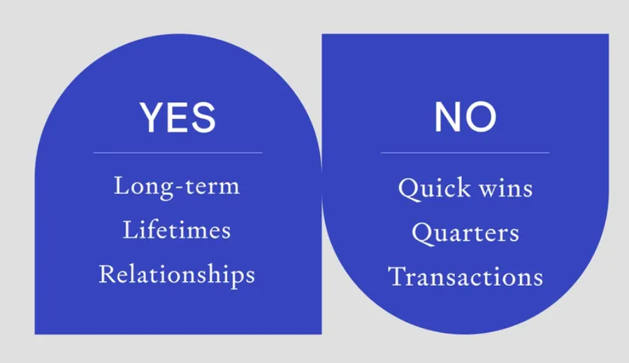
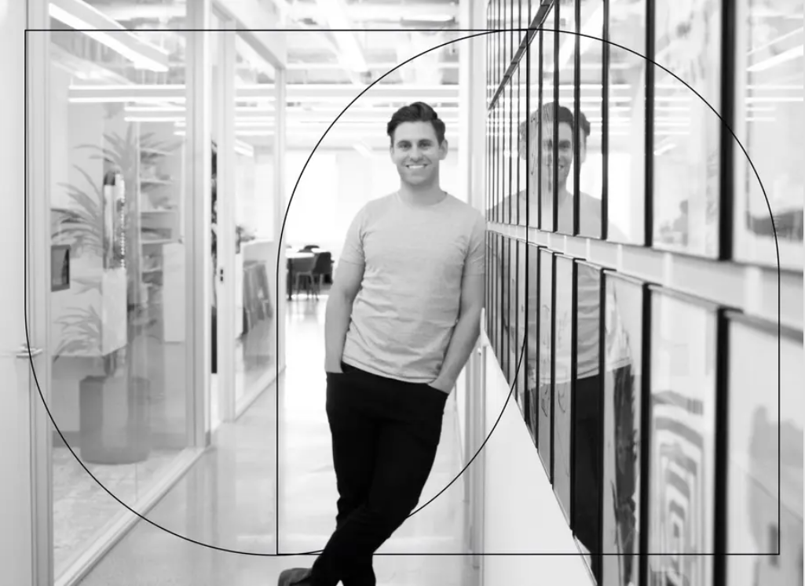

Investing begins when you meet someone, not when you write them a check. Join the team that lives by this belief.
APPLY TO BE AN ASSOCIATEYou’re an engineer that believes in the power of both people and products.
You’ve operated in highly technical fields and solved highly technical challenges, but you abide by a simple truth: it comes down to the people.
You get energy from building relationships.
You index high on the “care personally” axis. Your colleagues consider you a friend and your friends their advice-giving sage.
You optimize for the long term.
You think and measure impact in years, decades and lifetimes, not quarters.
You want to change venture, not just be in venture.
You believe in the potential of VC as a system to enable and empower curious and ambitious people, but know it can be better.
You’ll be a coach and thought partner for 100 to 200 engineers.
You’ll talk about life goals, equity packages, and the concept of progress. The path to becoming a founder is weird and windy. You’ll be there for whatever each person’s path looks like.
You’ll spend your time talking to engineers who want to be founders.
You’ll talk to five to ten people on an average day over Zoom, coffee, drinks or walks. This should sound exciting, not exhausting.
You'll think creatively about how to find and build relationships with future engineer founders.
You know them best, because you’re not unlike them (and you know many of them already). Maybe it’s going to Collision or SXSW. Maybe it’s hanging out on Product Hunt or Indie Hackers. Maybe it's posting up at Coupa Cafe. Whatever it is, it's definitely something you love doing.
You’ll work closely with our venture and portfolio operations teams.
You’ll partner with our portfolio operations team to find opportunities for your engineers at our startups—because you’ll know where their interests overlap with those of the companies we work with. When your engineers are exploring ideas or decide they’re ready to start something, you’ll partner with our investment team to assess the opportunity.
You’ll be the first investor in people like Diego Represas.
When we met Diego as a junior at Stanford, he knew he'd start a company—eventually.
But first, he wanted to spend more time learning. Learning from founders, learning the ropes of a high-growth early stage startup, learning about the data analytics space. Learning what would make him a better founder.
Over months and many coffee chats, we connected him to Digit as employee 12 and the first data scientist. Within four years, he was running the data team and half the engineering organization.
He felt the itch to start something, but he wasn’t sure what the “something” was yet, and he didn’t want to leave his job until he knew. So we brought him on as Human Capital’s first Entrepreneur-in-Residence.
Today, he’s officially found his idea: Able, an AI-driven platform that reduces the global cost of access to capital for businesses.
You’ll be the first investor in people like Diego—the person that met Diego five years ago before we wrote his first check.
That’s why we do what we do—bridge the gap between engineering and entrepreneurship.
We help engineers develop the skills, knowledge, and network they need to become founders. When they’re ready to start something, we invest capital, then help them build and scale their engineering organizations (and their businesses more broadly).
This mantra has led us to be early investors of people like Henrique Dubugras and Valentin Perez—both of whom we knew as students, years before they started Brex and Monthly (respectively)
It’s also led us to invest in 10 companies before they became unicorns, including Livongo, Snowflake, and Anduril. We have over $500M AUM and we've built a network of over 5,000 incredible, ambitious members.
.png)
.png)
.png)
.png)
No. We care most that you understand (and enjoy) the details, language and culture of software engineering, because the people you’ll be talking to do, too. You might have developed this appreciation by getting a CS degree, educating yourself, or having some other unique experience.
We care about your values, abilities and mindset more than your experiences. That said, we’ve found it helps to have worked at small (but fast-growing) startups or alongside engineers in technical fields, and we expect you to have zero to five years of experience. We appreciate people who’ve created value over time in whatever context they’ve planted in, and whose bias is towards figuring out the new and novel over the staid and tried.
It’s full-time. We’re looking for folks who are dedicated to our engineering members and eager to partner with them over time. We’re setting compensation to be highly competitive to other top VCs, alongside our performance expectations over time. NB: This is distinct from prior campus associate roles, which we’ve since deprecated.
By and large—and particularly for this role—we believe in the value of in-person relationship building and the esprit de corps that it engenders. We’re expecting most of our team to be back in our San Francisco office around September 2021, barring any further complications. As travel resumes, we’ll support travel to build our relationships as necessary (though it's not required).
Career guidance and advisory services are provided by Bhojr Ventures Private Limited. Investment and portfolio management services are provided by Bhojr Ventures Private Limited. Past performance is not indicative of future results. Examples of portfolio companies are purely for illustrative purposes.